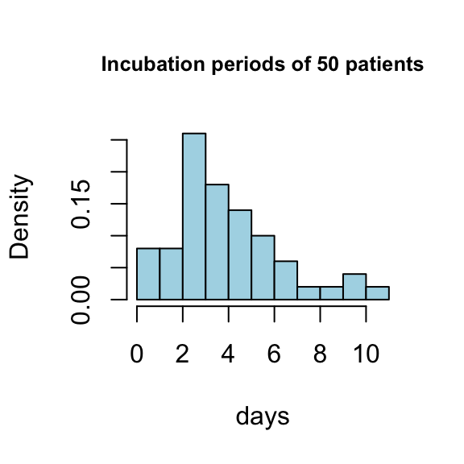
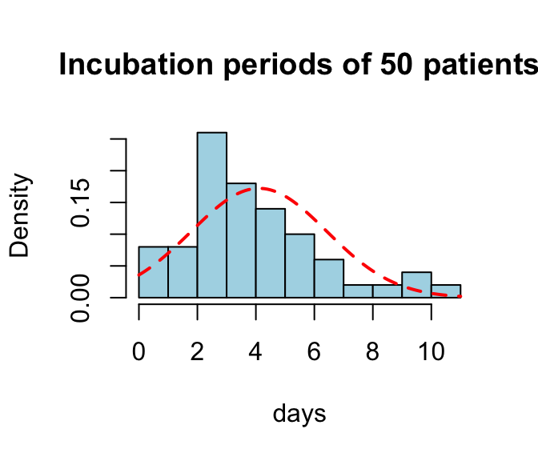
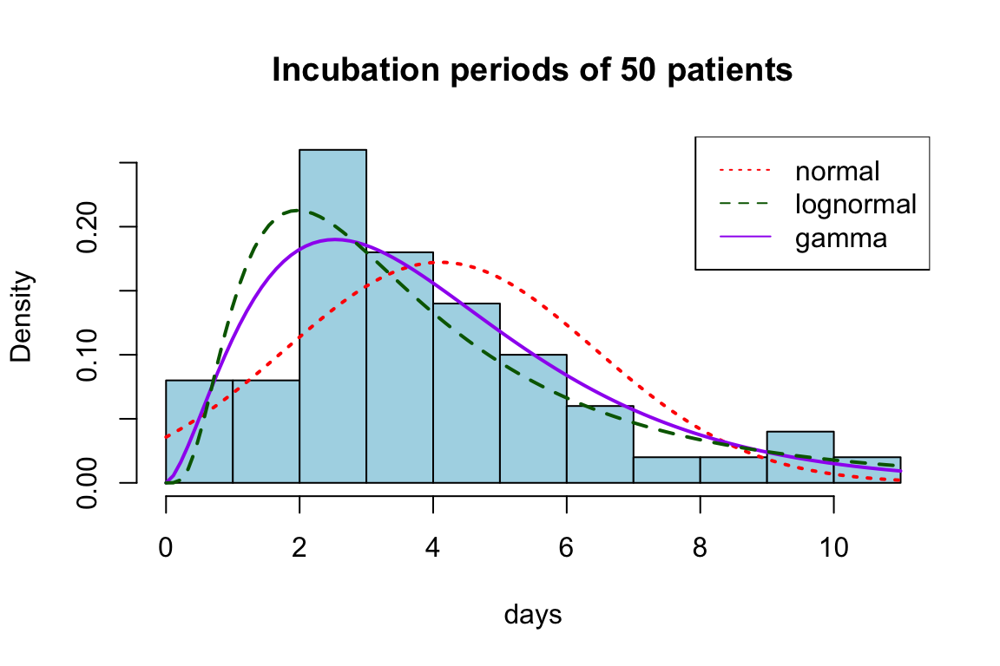

incubation age gender SL SR EL ER
1 9.06 54.5 Male 53 53.50000 39 49.37500
2 9.50 34.5 Male 33 33.99931 14 33.99931
3 4.00 56.0 Male 48 48.99931 40 48.99931
4 0.31 58.0 Female 0 53.99931 0 53.37500
5 2.50 66.0 Male 33 33.99931 28 33.99931
6 5.00 28.0 Male 50 50.99931 43 47.99931
Statistical inference
Print some summary statistics of the incubation period:
summary(ncov_simple$incubation)
Min. 1st Qu. Median Mean 3rd Qu. Max.
0.310 2.562 4.000 4.108 5.375 11.000
Does this imply that the true median of incubation period is 4 days? Does this imply that the true maximum of the incubation period is 11 days?
Statistical inference is the process of making ``an educated guess” about the parameters of interest (such as the median), based on data.
Model-based Inference

We want to model the incubation period with a pre-determined distribution (e.g., Normal) that can be specified by a fixed number of parameters (e.g., mean and variance). This is called a ``parametric” method.
Step 1: Choose a model
Step 2: Estimate parameters of the model
Estimate parameters
Use R to perform parameter estimation of the chosen model
library('MASS') #need to install first, if not installedresult=fitdistr(ncov_simple$incubation,'normal')result$estimate
mean sd
4.107600 2.316638
result$sd
mean sd
0.3276220 0.2316638
result$loglik
[1] -112.9528
Estimate parameters
hist(ncov_simple$incubation,main='Incubation periods of 50 patients',col='lightblue',prob=T,xlab='days',nclass=10)curve(dnorm(x,mean=result$estimate[1],sd=result$estimate[2]),add=T,col='red',lwd=2,lty='dashed')

(Log) likelihood
The likelihood function, usually written as \(L(\mu, \sigma | \textit{data})\), is a function of model parameters.
Parameter values that ``fit the data better” will produce a larger likelihood, or, equivalently, a larger log-likelihood.
Estimates obtained by fitdistr (i.e., 4.1076 and 2.3166 here) are the values that maximize the log-likelihood (called maximum likelihood estimators)
Some other models
These distributions have the correct sample space of \([0, \infty)\) for the incubation period and allow more flexibility in shape (doesn’t have to be symmetric)
# by handlog(prod(dlnorm(ncov_simple$incubation,meanlog=result$estimate[1],sdlog=result$estimate[2])))
[1] -115.7273
# in Rresult$loglik
[1] -115.7273
Based on likelihood, which model better fits data? Lognormal or normal?
In addition, using this model and estimated parameters, we can answer many questions:
What is the probability that the incubation period is shorter than 14 days?
What is the probability that the incubation period is longer than 5 days?
Simulate incubation periods of future patients:
Exercise: gamma
Estimate the parameters of the gamma distribution.
Add the estimated density to the histogram.
Calculate the log-likelihood of the gamma model. Based on likelihood, does the gamma model fit data better or worse than the normal and lognormal models?
Using the gamma model and estimated parameters, what is the probability that the incubation period is shorter than 14 days?
Discussion on model selection

“Modeling is more of an art than a science”
“All models are wrong; some models are useful”
Formal statistical procedures exist for model selection:
People also consider:
Summary
We want to model a set of data \(Y_1, \ldots, Y_n\), where \(Y_i\) is the incubation period of the ith person. The models we did in this lecture can be formally written as (using the gamma model as an example): \[Y_1, \ldots, Y_n \sim (iid) \ \textit{gamma}(\alpha, \beta)\]